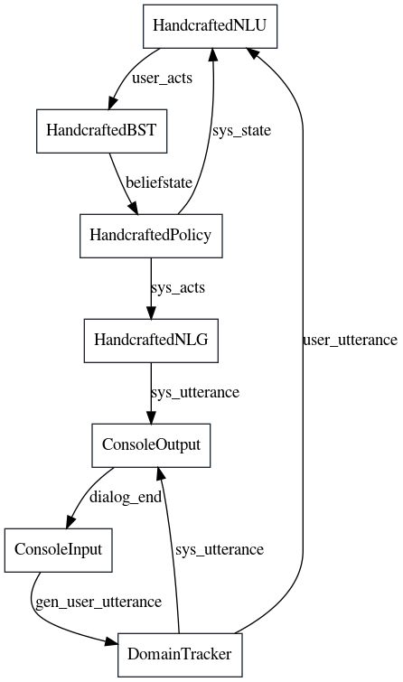
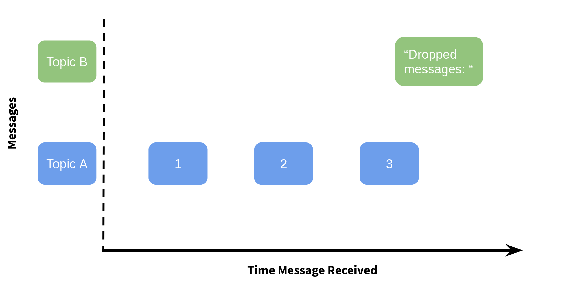
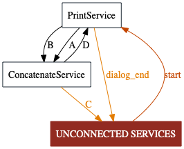

You can find the Jupyter Notebook in our GitHub repository.
Introduction to ADVISER 2.0 Services¶
In this tutorial, we will discuss Services which are the backbone of the ADVISER 2.0 toolkit and allow for the creation of multi-modal dialog systems.
What are Services?¶
A dialog system created with ADVISER 2.0 is constructed from services, with a service for each module from the modular dialog system graph shown in the previous tutorial. Each service receives inputs from previous services, processes them, and then passes the results on to the next services. An example of this can be seen in the dialog system graph below:

Each block represents one service (module) in the dialog system and each arrow represents the inputs/outputs of that service. To communicate with each other, services use a publisher/subscriber pattern. This will be explained later in this tutorial, but basically means, that a service defines a list of inputs it expects and that it outputs. The service is then asynchronously called once all the expected inputs are available.
Example:
Let's take the HandcraftedNLU service class as an example:
* The service receives a string user_utterance as input
* It is important to note: the source of this input is unknown to the service and does not matter. In this example, it comes from the console, but it could just as easily come from a GUI or an automatic speech recognition (ASR) service
- The service outputs a list of user acts extracted from the user utterance
- The receiver(s) of the outputs is not known to the service and does not matter
In summary, a service does not posess nor require any knowledge about a dialog system - its purpose is to process a piece or stream of information and send the result out so other services might use it. This allows dialog systems to be created where it is very easy to swap out (or combine) different services.
Publish Subscribe at a high level¶
Information is passed between services using the publisher/subscriber pattern which enables for asynchronous communication between services: * A Publisher publishes messages to a certain topic (where a topic is just a string specifying the name of an information channel) * A Subscriber subscribes to a certain topic, and is notified everytime a new message is published to this topic
If a method is a subscriber, it is automatically called as soon as it has recieved a message for each of the topics it subscribes to. This means that rather than relying on a traditional linear architecture, where each module in the dialog system must be called sequentially, we can break away and allow modules to run arbitrarily in parallel - which is critical for handling multimodal input which might need continuous processing.
As a note, methods in a service class may act as both a publisher and a subscriber, only one, or neither.
Implementing a Service¶
With this terminology in mind, let's look at the way a service subscribes to and publishes messages. As a first step we'll handle all the imports needed for this tutorial.
# FIRST SET UP ENVIRONMENT
import sys
import os
from typing import List
import time
sys.path.append(os.path.abspath('../..'))
from services.service import Service, PublishSubscribe, RemoteService
from utils.topics import Topic
from services.service import DialogSystem
from utils.domain.domain import Domain
from utils.logger import DiasysLogger, LogLevel
Creating our First Service¶
For our first service, we are going to make a simple class with a method that subscribes to two input topics, "A" and "B" and can publish to two output topics: "C" and "D". The code for this can be seen below:
class ConcatenateService(Service):
@PublishSubscribe(sub_topics=["A", "B"], pub_topics=["C", "D"])
def concatenate(self, A: int = None, B: str = None) -> dict(C=str,D=str):
"""
A method to concatenate the content of two input topics and conditionally publish to either
topic "C" or topic "D"
Args:
A (int): message for topic "A"
B (str): message for topic "B"
Return:
(dict): dictionary where key is the topic to be published to (conditionally "C" or "D"
depending on whether the value of A is 3) and the value is the concatenation
of inputs A and B
"""
print("CONCATENATING ", A, "AND ", B)
result = str(A) + " " + B
if A == 3:
return {'D': result}
else:
return {'C': result}
Inheriting from the Service class:
- Any service that wants to send / receive messages in the ADVISER 2.0 system must inherit from
services.service.Service. This class handles the communication mechanisms between services and makes sure the service is properly registered with the dialog system so that messages are properly delivered to and received by the appropriate services.
Decorating Methods with PublishSubscribe:
-
Each service method that should send / receive messages must be decorated with the
services.service.PublishSubscribedecorator. Let's have a look at the decorator arguments:sub_topics: a list of topics the method needs as inputs.- The method will be called as soon as at least 1 message for each subscribed topic has been received and in cases where multiple messages for a topic are received, only the most recent message will be used.
-
Every topic in the sub_topics list, must be also be included as a method argument with the same name. This allows the system to map message content to method arguments.
-
pub_topics: a list of topics the function wants to publish messages to. You don't have to publish anything during a function call, even if you include entries in thepub_topicslist. But if you do want to publish a message, make sure:- Only publish dictionaries! Otherwise, the system does not know what topic to send your return values to
- You are free to choose not to publish to all topics declared in pub_topics
- In our example, we have the option to publish to topic
Cand to topicD, but this method will only to publish to one or the other depending on the message content ofA
- In our example, we have the option to publish to topic
- Dictionary keys must correspond to the topics in the
pub_topicslist
Example:

Assume the decorated function receives the following input as shown above:
A: 1A: 2A: 3B: "dropped Messages"
How will the concatenate method be called:
* The concatenate method will only be called after the fourth message, because this is the first time where at least one message per topic is available (3 messages for A, 1 for B).
* Since only the most recent messages will be used, the function will receive the following input: (A=3, B="dropped Messages")
* The variable result will thus contain the string 3 dropped Messages and this will be publised to topic D
* As a note: There are mechanisms for collecting all messages instead of dropping them, but those will be introduced later.
Creating a Second Service¶
Finally, we need a second service which is responsible for generating the messages for topics A and B. This new service will also be responsible for shutting down the dialog loop when the example is over, by publishing True to the topic DIALOG_END. This topic is one of the default control message topics and is required to end a dialog. When we create our first dialog system, we will explain this in more detail. For now, let's take a look at our second service:
class PrintService(Service):
@PublishSubscribe(sub_topics=["D"], pub_topics=[Topic.DIALOG_END])
def print_d(self, D: str):
"""
A method which prints the content of topic D and then publishes the end dialog signal
Args:
D (str): content of topic D, represents the output of the method concatenate
Return:
(dict): key represents the topic DIALOG_END which should be publsihed to with the value True
"""
print(f"RECEIVED D={D}")
return {Topic.DIALOG_END: True}
@PublishSubscribe(sub_topics=["start"])
def turn_start(self, start: bool = True):
"""
A method to start the example communication, it waits for the signal to start the dialog and
then calls the send_a method three times followed by the send_b method once
Args:
start (bool): The signal to start the dialog system (will be published by whatever DialogSystem
object that this class is registered to)
"""
a = 1
while a < 4:
time.sleep(0.5)
self.send_a(a)
a += 1
time.sleep(0.5)
self.send_b()
@PublishSubscribe(pub_topics=["A"])
def send_a(self, a: int):
"""
A method to print a given integer a and then publish it to topic "A"
Args:
a (int): the integer to publish to topic "A"
Return:
(dict): where the key is "A" (topic to publish to) and the value is the given int a
"""
print("SENDING A=", a)
return {'A': a}
@PublishSubscribe(pub_topics=["B"])
def send_b(self):
"""
A method to publish "messages dropped!" to topic "B"
Return:
(dict): where the key is "B" (topic to publish to) and the value is "messages dropped!"
"""
print("SENDING B")
return {'B': "messages dropped!"}
print_d():
This method subscribes to the content of topic D and when it receives a message, prints the content and publishes a signal to DIALOG_END to finish the dialog.
turn_start():
This method is called once it receives a message from the start topic. It then sends three messages to topic A (by calling send_a) and one message to topic B (by calling send_b).
The sleep calls are inserted here so we can watch the messages in the correct order (which is otherwise not guaranteed, since this is a multithreaded system). In real applications, such sleep statements are not necessary
send_a():
This method does not subscribe to anything, but publishes a given int a to topic A
send_b():
This method does not subscribe to anything, but publishes a given string b to topic B
Instantiating and Shutting Down a Dialog System¶
With these two services, we can test the message behavior we just described. The first step is creating a dialog system and then registering these two services to it. A dialog system is important, because it is responsible for handling synchronization and message passing, registering remote services, and providing debugging functionality.
Creating a New Dialog System¶
To get started, we will create an instance of each of our services and register them with a dialog system by passing them in to the services parameter as a list:
Note: Because a dialog system also sets up the communications pipelines for each of the services, it is important that you only have one dialog system active at a time. If you try to instantiate a new dialog system without shutting down the previous one, you will get an error as the ports are already in use. You can shut down the dialog system by typing: ds.shutdown()
Debugging a Dialog System¶
Checking for Inconsistencies¶
To see if all of our required / offered service topics are actually connected to something, we can check the dialog system for inconsistencies:
[91m
(Potential) Errors (subscribed topics without publishers):
topic: 'start', subscribed to in services: {'PrintService'}
[0m
[93m
Warnings (published topics without subscribers):
topic: 'C', published in services: {'ConcatenateService'}
topic: 'dialog_end', published in services: {'PrintService'}
[0m
Here, we can see that PrintService has to receive an external start-topic message to be able to function - without that, turn_start will never be called. In this case, this is okay because the dialog system can provide this start message, however in a case where we would want start turn to be called multiple times, this would be a problem.
Additionally, we publish to topic C but no service subscribes to this.
As you can see, when your functions are not called as expected, this output might help you track down bugs in your system.
If you want to get even more detailed debug output (print all messages and associated topics), you can provide a utils.logger.DiasysLogger instance to the debug_logger argument of the DialogSystem constructor and to the constructor for each service you want to log information from.
Displaying the System Graph¶
To get an overview of the system, we can also draw a graph of all services and their connections which is helpful to make sure that all services are connected in the ways that we thought they were. The code for drawing this graph can be seen below:
ds.draw_system_graph(name='tutorialgraph', show=False) # render image to tutorials/tutorialgraph.gv.png
# render image in jupyter notebook
from IPython.display import Image
display(Image(filename='tutorialgraph.gv.png'))

You can see in the system graph that PrintService needs an outside message to a start topic (which in turn triggers the counter for $a=1,\dots,3$).
Both topics, A and B, are published by PrintService and subscribed to by ConcatenateService.
Similarly, ConcatenateService publishes to topic C and D, where D is subscribed to by PrintService.
C however is published but never subscribed to - which is shown by the arrow from ConcatenateService to the UNCONNECTED SERVICES node in the dialog graph.
Logging¶
In order to debug more effectively, ADVISER 2.0 also comes with logging functionality through the class utils.logger.DiasysLogger. The logger has the option to log to the console and/or to a file with the following log levels:
* NONE: No information will be logged
* RESULTS: Summary information will be logged about the success rate/# of turns after an epoch of training/testing
* DIALOGS: All user/system utterances and summary statistics
The logger can be passed to any of the modules, to log that module's output, however when passed to the dialog system itself, the logger will additionally be able to log any messages sent through and all received by the dialog system - including the message's topic and content.
A DiasysLogger can be instantiated as below:
# create logger to log everything to a file
logger = DiasysLogger(console_log_lvl=LogLevel.NONE, file_log_lvl=LogLevel.DIALOGS)
And passed to a dialog system to log all message communication by passing it in with the debug_logger parameter on instantiation.
Running a Dialog¶
To start a new dialog you can call the DialogSystem object's run_dialog method. When doing this, it is important to specify a start_signal in the form of a dictionary where keys are the topics the signal will be published to and values are the message content to be published.
We need an external signal because the run_dialog method is blocking and no function calls after run_dialog will be executed until the dialog sends an exit signal. Therefore, the start signal is an external one time message (or multiple messages) which kickstart the normal dialog loop. In our case, the start signal is to publish to the start topic and since the value of this is never used, we simply set it to True.
SENDING A= 1
SENDING A= 2
SENDING A= 3
SENDING B
CONCATENATING 3 AND messages dropped!
RECEIVED D=3 messages dropped!
... And we get exactly the output described in the previous section!
concatenate was only called after a message from both topics, A and B, arrived - and since A received multiple messages before B, those messages were dropped so only one concatenated string is printed.
Since the dialog system loop is blocking for a whole dialog, it is very important to make sure there is an end condition to close the loop (i.e. publishing True to the topic DIALOG_END). If none of our services did this,
this notebook code would be stuck after calling the run_dialog and no new code could be executed. To prove this is not the case, try running the code cell below :)
Not stuck in a dialog loop!